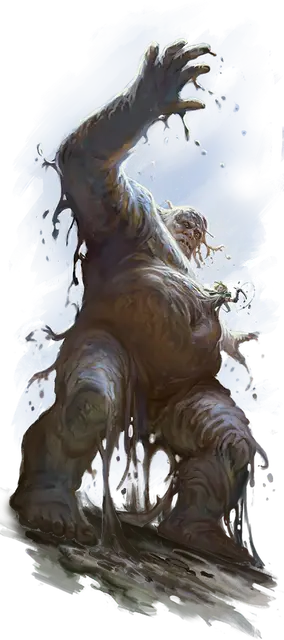

Грязевой скиталец
Mud Hulk
Большой Элементаль, обычно хаотично-злой

Класс Доспеха 13 (природный доспех)
Хиты 68 (8к10 + 24)
Скорость 40 футов
| мод | спас | ||
|---|---|---|---|
| СИЛ | 16 | +3 | +3 |
| ЛОВ | 8 | −1 | −1 |
| ТЕЛ | 16 | +3 | +3 |
| мод | спас | ||
|---|---|---|---|
| ИНТ | 5 | −3 | −3 |
| МДР | 9 | −1 | −1 |
| ХАР | 6 | −2 | −2 |
Сопротивление урону кислота
Иммунитет к состояниям истощение, паралич
Чувства пассивное Восприятие 9
Языки Великаний, Терран
Опасность 3 (700 опыта)
Бонус мастерства +2
Особенности
Аморфный. Грязевой скиталец может, не протискиваясь, перемещаться через узкое пространство шириной вплоть до 1 дюйма.
Вязкая грязь. Земля в пределах 15 футов от грязевого скитальца становится труднопроходимой местностью для других существ.
Действия
Обволакивающий удар. Рукопашная атака оружием: +5 к попаданию, досягаемость 10 футов, одна цель. Попадание: 9 (1к12 + 3) дробящего урона. Если цель - существо Большого размера или меньше, оно должно преуспеть в спасброске Силы Сл 13, иначе будет затянуто в пространство грязевого скитальца и поглощено им. Будучи поглощенной, цель не может дышать, становится опутанной и получает 6 (1к12) урона кислотой в начале каждого своего хода. Когда грязевой скиталец перемещается, поглощённая цель перемещается вместе с ней. Грязевой скиталец может иметь поглощённой лишь одно существо. Пока существо поглощено, грязевой скиталец не может использовать свою способность Аморфный.
Поглощённая цель может повторять спасбросок в конце каждого своего хода. Вырываюсь в случае успеха и перемещаясь в ближайшее незанятое пространство.
Грязевой всплеск. Грязевой скиталец выбрасывает грязевую массу, которая разбрызгивается в сфере радиусом 10 футов с центром в точке, находящейся в пределах 30 футов от грязевого скитальца. Каждое существо в этой области должно совершить спасбросок Ловкости Сл 13, получая 10 (2к6 + 3) дробящего урона в случае провала или половину этого урона в случае успеха. Пораженный участок становится труднопроходимой местностью до начала следующего хода грязевого скитальца.
Описание
Что ж, пока ты скорбишь, эта тварь пытается утопить меня в грязи! Простите, я выставляю руку, чтобы уберечь себя от этого.
- Бигби
Предками глиняных скитальцев были холмовые великаны, которые, живя в изоляции, поедали все, что попадалось под руку, пока не были вынуждены начать питаться самой землей. Элементальная природа великанов проявила себя и превратила их в созданий из живой грязи.
Грязевой скиталец отдаленно напоминает своих предков, но его тело состоит из влажной грязи, которая постоянно отслаивается, создавая вокруг него густые лужи из этого вещества повсюду, где проходит существо. Он сохраняет голод холмового великана, обволакивая все, что хоть отдаленно похоже на что то съедобное, и непосредственно всасывая это в свой организм. Когда ему угрожают, он швыряет массы грязи в своих врагов, чтобы убедиться, что они остаются на месте достаточно долго, для того что бы грязевой скиталец поглотил их.